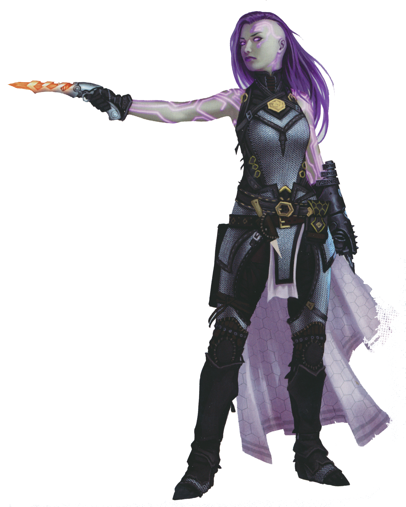
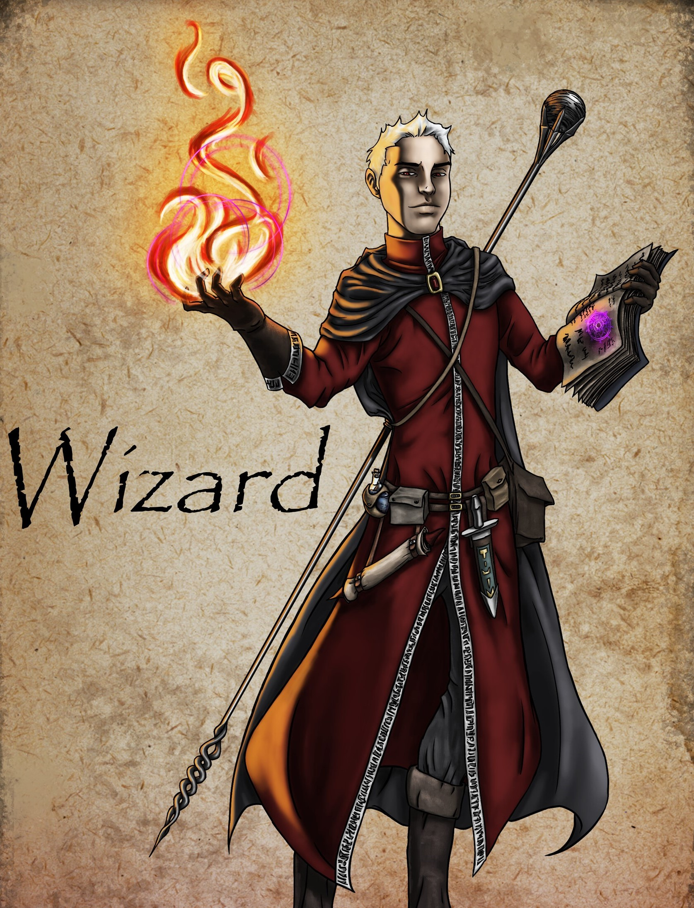
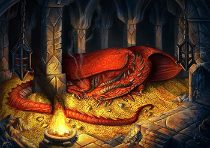
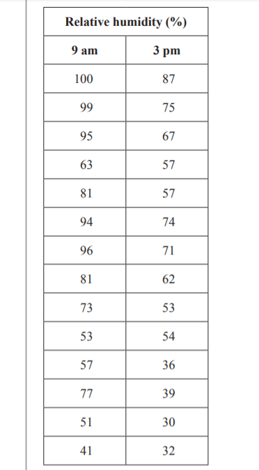
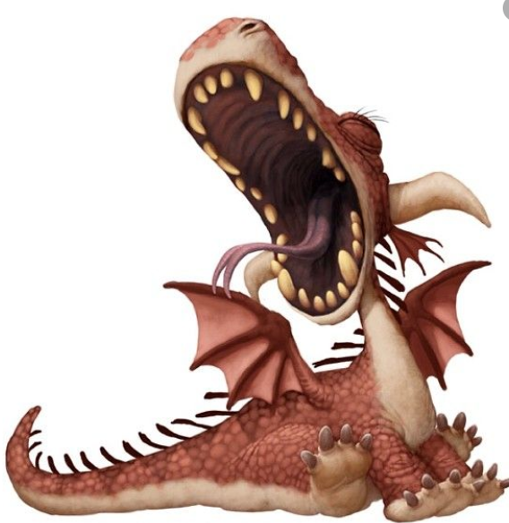
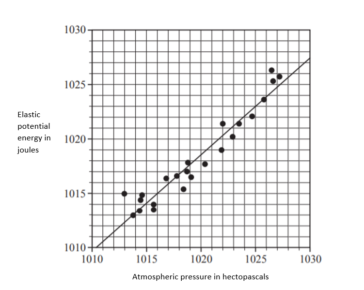
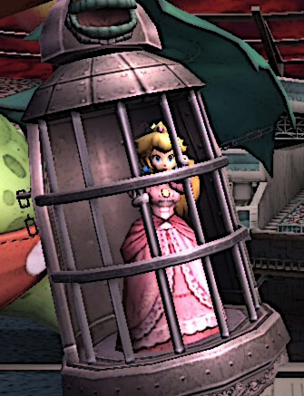

This is the second adventure in Statistics. The aim is to use the
skills you have developed in Further Mathematics to complete the next D&D
inspired mission. Before you can, you need to have
mastered both the uni variate and the bi variate components of the course.
Escape "Room" One - Levelling up

Name – Dis Tress Age – 100 years
Shoe size - 7 AC = 16 HP=8 Droid deals 2 HP damage.
Name – Lesley Lark Age – 39 years Shoe size - 10
AC=16 HP=9 Bard deals 1 HP damage.
Name – Steel Gaze Age – 25 years Shoe size – 8.5
AC=15 HP=8 Ranger deals 2 HP damage.

Name – Flame Whisperer Age – 402 years Shoe size – 13.5
AC=16 HP=8 Wizard deals 1 HP damage.
Upon the completion of the mushroom grove mission, the characters were
awarded 2 experience points. This means that they can level up before
they undertake any new missions.
The above cards introduce them to you and give you some basic stats
for each. You are told their name, age and shoe size etc.
It is the other stats that need to change. Their armour class (AC) may
increase and their hit points (HP) may also increase. With only two
experience points their damage dealt will be unchanged. Click here to see
how the number of experience points gained will influence the character
traits.
Use your knowledge of Further Mathematics terminology to answer the
following questions in order to proceed.
In this example what is the
explanitory variable?
When trying to determine the armour
class, what is the response variable?:
When trying to determine the number
of hit points a charater has, what is the response variable?:
What type of graph would you use if
you wanted "Experience Points" on the x-axis and "Armour Class" on the y-axis?:
Select the graph:
...
Room Two - Analyse the battle ahead and choose your leader.
Name – Dis Tress Age – 100 years
Shoe size - 7 AC = 16 HP=8 Droid deals 2 HP damage.
Name – Lesley Lark Age – 39 years Shoe size - 10
AC=16 HP=9 Bard deals 1 HP damage.
Name – Steel Gaze Age – 25 years Shoe size – 8.5
AC=16 HP=8 Ranger deals 2 HP damage.
Name – Flame Whisperer Age – 402 years Shoe size – 13.5
AC=17 HP=9 Wizard deals 1 HP damage.

The party, who have now all been levelled up, receive a dispatch
from the King of Strathweyah. His Daughter, Princess Crysalot, has
been kidnapped by his adversary from the neighbouring kingdom.
Steel Gaze immediately embarked on a scouting mission and found that
the princess is being held in a dungeon guarded by a fierce dragon.
Steel brings back a drawing of the dragon and you immediately start
researching the breed.
You find a reference in an ancient scroll that tells the tale of a
past quest. It too involved this type of dragon. The scroll eludes to
the fact that these dragons are only active when the temperature
exceeds 8.0 oC. Any colder than that and a stealthy
warrior can sneak past.
Table 1 below shows the day number and the minimum temperature,
in degrees Celsius, for the 15 consecutive days before today.
Day Number
Minimum Temperature (oC)
1
12.7
2
11.8
3
10.7
4
9.0
5
6.0
6
7.0
7
4.1
8
4.8
9
9.2
10
6.7
11
7.5
12
8.0
13
8.6
14
9.8
15
7.7
Which of the two variables in this
data set is an ordinal variable?
The incomplete ordered stem plot below has been constructed using
the data values for days 1 to 10.
Minimum Temperature (oC)
key: 4|1 = 4.1 and n=15
4
1 8
5
6
0 7
7
0 _ _
8
_ _
9
0 2 _
10
7
11
8
12
7
Complete the stem plot above by adding
the data values for days 11 to 15 (Type answers here separated by a
comma and a space eg. 1, 2, 3, 4, 5):
Use this stem plot to determine the
value of the first quartile (Q1)?:
Use this stem plot to determine the
percentage of days with a minimum temperature lower than 9.8°C
(you must include a percentage sign):
Great work on those questions! 100% correct
If there is less than a 25% chance that the dragon will be asleep
upon your arrival you should choose the Ranger, Steel Gaze, to lead. If there is a
50% chance that the dragon will be asleep choose the droid, Dis Tress. If there is
a greater than 50% chance that the dragon will be asleep choose the bard, Lesley Lark.
If the chance of the dragon being asleep falls in the top 25% you should
choose the Wizard, Flame Whisperer.
Steel Gaze
Lesley Lark
Flame Whisperer
Dis Tress
CONGRATULATIONS! You've made it to 'Room Three' -
Let the journey begin.
Your team moves out and by nightfall they have made it to the gates of the neighbouring village.
You instruct them to find shelter in the local Inn. Here they meet "Twominnoodles" a local drunk.
They sit with him and buy him drinks in hope that he will divulge information pertaining to the princess.
They have success and discover that even if the dragon is awake it is also restricted as to when it can breathe flame.
The humidity must be lower than 60%.
Dis Tress messages you with this information and you pull up humidity readings from the past fifteen days;

Can you make this battle safer?
A least squares line is to be fitted to the data with the aim of predicting the relative humidity at 3 pm
from the relative humidity at 9 am. This way you can determine if it is likely
the dragon will be able to produce fire tomorrow afternoon based on tomorrow mornings humidity.
Use your CAS calculator.
...
Now you have determined that the equation that can be used to predict
the 3pm humidity based on the 9am humidity is: humidity at 3pm = -1.26 + 0.765 × humidity 9am
You have determined from this that today is an appropriate day
to attack. You message the team and they begin to assemble their
weapons.
They rest while they wait for 3pm to roll around. The bard, Lesley
Lark, entertains them with a relaxing yet inspiring melody.
"Room" Four - Attack the dragon!.

The team stealthily makes their way to the dungeon of the main castle!
While they find the dragon awake, it is very sleepy and they have
time to devise an attack plan.
In this half awake state it is going to take 10 hits to kill him.
The Ranger, Steel Gaze, has an adjustable long bow he can use and
the Droid, Dis Tress, has a long sword.
The Ranger asks you to assist him in setting his bow. He knows that
the atmospheric pressure influences what tension he should adjust to
in order to penetrate the chest of the dragon.
The scatterplot below shows the required elastic potential energy (tension) of a longbow
in joules, plotted against the atmospheric pressure in
hectopascals for the last 23 days.

A least squares line has been fitted to the scatterplot as shown.
The equation of this line is:
elastic potential energy of longbow (J) = 111.4 + 0.8894 × atmospheric pressure.
You know that the current atmospheric pressure is 1022 hectopascals.
What tension (to the nearest joule) should Steel set the bow to.
...
"Room" Five - SAVE THE PRINCESS!

The dragon is hurt but still ready to fight. He takes a massive
inhalation of air and blows at the team. Thank goodness he is
unable to produce fire at this humidity! Lesley Lark gets the fright
of his life and trips backwards into Dis Tress's upraised sword.
He is dealt 2 hit points damage. Unfortunately, he also knocked Dis
over and she is now unable to attack.
The conjuring
The wizard, Flame Whisperer, steps forward. He can draw on Gazes'
residual energy from his previous arrow strike to launch his own fire
ball. Remember Steel set the bow to 1020 J.